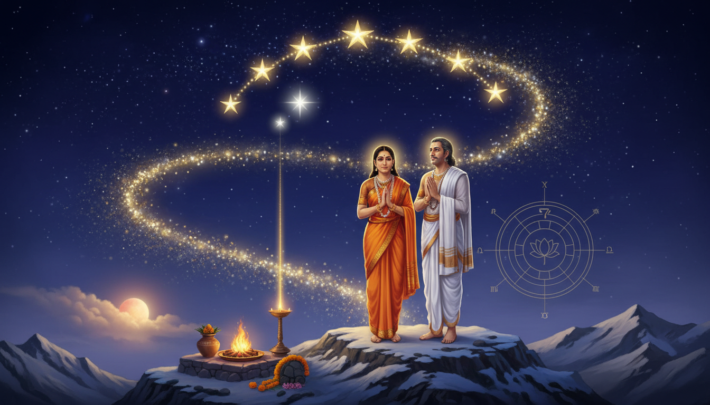

Every marriage remedy sold in the market assumes the same thing: that the seventh house is a matching problem. Two charts, a score out of thirty-six, a list of doshas to be cancelled, a gemstone to be worn on a Friday. The assumption underneath is that a marriage is a negotiation between two people, and that the ritual work is to improve the terms.

Arundhati is the tradition's argument against that assumption, and she makes it astronomically.
She is the only woman given a seat in the Saptarishi mandala — not beside the seven sages as a consort, but inside the circle, counted with them, worshipped with them. Her star is Alcor, the faint companion of Mizar in the handle of the Great Bear. And the reason the tradition put a woman there, rather than another rishi, is that the thing they wanted to mark in the sky was not wisdom or power. It was a pair that does not come apart.
That is the whole content of her rite, and it is why her material remains useful to anyone whose seventh house is not asking for a better partner but for a bond that holds its shape under pressure. A marriage that keeps surviving the same argument. A family in which every generation produces one broken union. A woman told by an astrologer that her chart carries saubhagya-hani — the loss of the married state — and who has been carrying that sentence for years. A couple whose Saptapadi was performed correctly and whose life together has never once felt witnessed.
This is the working manual for that: who she was before the star, why the seat had to be fixed and what "fixed" actually means in the sky, the twelve-year drought she broke, the hundred sons she lost, the graded gaze that bears her name — and the form in which the rite can still be done, on a terrace, with a copper plate of water.
The Woman Before the Star
The tradition gives at least three incompatible births and does not reconcile them, which is normal and, in this case, useful — each version supplies a different piece of the practice.
The Kardama line. In the Bhagavata Purana she is the eighth of the nine daughters of Kardama and Devahuti. Her sisters are given to the sages in a single batch: Kala to Marichi, Anasuya to Atri, Shraddha to Angiras, Havirbhuk to Pulastya, Gati to Pulaha, Kriya to Kratu, Khyati to Bhrigu, Arundhati to Vasishtha, Shanti to Atharvan. Read that list slowly, because it is the whole architecture of the third book of the Bhagavata in one sentence: the nine daughters of one mother become the nine lineages of the rishis. Arundhati is the eighth. Her son is Shakti, her grandson is Parashara, her great-grandson is Vyasa — which makes her the great-great-grandmother of the Mahabharata, the Puranas and the whole of Jyotisha as it is practised today. Every horoscope ever cast in the Parashara line descends from her.
The Sandhya line. The Shiva Purana says she was, in a previous birth, Sandhya, the mind-born daughter of Brahma. Sandhya is desire itself, born of the creator's own heat — and she does not want to be desire. She goes to Vasishtha, and he gives her the instruction that the Purana bothers to record: do penance, and purify the passion out of your own nature. She pleases Shiva by austerity, and Shiva's answer is not a boon but a direction — enter the fire of Medhatithi. She does. She comes out as Medhatithi's daughter, and is then married to Vasishtha.
Hold onto that sequence, because it is the tradition's first statement of what her rite is for. She did not marry to fulfil desire. She married after she had burned desire out of herself, and the fire was the instrument. Any rite addressed to her that is aimed at getting someone — at binding a specific person's affection — is aimed at the version of her that she deliberately destroyed. That is not a moral objection. It is a statement about which door the technique opens.
The Kashyapa line. Other Puranas make her the daughter of Kashyapa and the sister of Narada and Parvata, offered to Vasishtha in marriage by Narada himself. This version matters for a smaller reason: it explains why she can speak. Narada's sister is a woman with vak — and the Mahabharata says plainly that she was an ascetic who used to give discourses to the seven sages themselves. Not listened to by them. Lectured them.
Why the Seat Had to Be Fixed
Here is the astronomy, and it is the part that most devotional retellings skip, and it is the part that makes the remedy work.
In the Saptarishi mandala — the seven stars of Ursa Major, the sapta rishis being Kratu, Pulaha, Pulastya, Atri, Angiras, Vasishtha and Marichi — the star at the bend of the handle is Mizar, called Vasishtha. Just above it, at about twelve arcminutes of separation, sits a fourth-magnitude star: Alcor, Arundhati. The pair is visible to the naked eye as a star with a small companion — in the old European star-lore it was called the horse and rider, and it was used as a test of eyesight long before it was catalogued as a double.
Now: Alcor is faint. It sits close enough to Mizar that a poor sky, tired eyes, or a weak flame will lose it entirely. And the tradition noticed exactly this, and built the whole ritual around it.
The claim embedded in the Arundhatī Darśana Nyāya — the maxim that bears her name, used in Sanskrit logic to mean inferring the unknown from the known — is that Arundhati cannot be seen directly. She can only be seen relatively. You show the seeker a tree. Then the branch of that tree. Then a leaf on that branch. Then, from the leaf, the star. You build a staircase of knowns until the eye can hold the unknown.
Sit with how precise that is. The tradition put the model of graded perception in the sky, next to a star that is hard to find, and named that star after a woman whose entire legend is about a relationship that is hard to hold. The technique and the subject are the same thing. You do not see Arundhati in isolation. You see her only as the point that stays at a fixed distance from Vasishtha. When the sky is good and your eyes are rested, you see the pair; when it is not, you see only Mizar and have to trust that the companion is there.
That is what "fixed" means, and it is not what people assume. The word is achala — immovable — and it does not mean the star never sets. In most of India the Great Bear dips toward the northern horizon and does exactly that. What is immovable is not her altitude. It is her distance from her partner. Mizar and Alcor have held that twelve-arcminute separation for as long as anyone has looked. They are not fixed in place. They are fixed in relation — and this is the only kind of fixedness the tradition ever promises a marriage.
Which reframes the seventh house entirely. A seventh house is not a promise that nothing will move. It is the place where the chart asks: what is your separation, and does it hold? The remedial question is never "how do I stop the movement." It is "how do I fix the distance."
The Twelve-Year Drought
The Mahabharata gives one episode that is the closest thing in the literature to a procedure — an actual record of her doing something that produced a result.
It did not rain for twelve years. The seven sages, who live on roots and fruit and the charity of the forest, were suffering — not dramatically, but in the specific way of holy men in a long drought: the forest stopped giving, the roots dried, the hermits began to leave. And it is Arundhati — not Vasishtha, not Marichi, not the eldest — who pleased Shiva, and the rain came.
The same passage contains the detail that tells you what kind of power the tradition attributed to her. Svaha, the wife of Agni, had a well-known ability: when Agni burned in the yajna, Svaha could take the form of the wife of whichever rishi was being invoked, and receive the offering in her shape. She could become the wife of Marichi, of Atri, of Angiras — of any of the six. She could not become Arundhati. The one form in the whole Saptarishi circle that could not be counterfeited was hers.
Read those two facts as a pair and the doctrine is complete. She can end a twelve-year drought, and she cannot be imitated. The power and the untransferability are the same property: what she has is not a form that can be borrowed, but a relation that has to be lived. Svaha could wear the shape of six marriages. She could not wear the shape of the one that had been burned clean first.
This is why the Arundhati remedies work as a class and the "attraction" remedies do not. Nothing in the tradition offers a way to assume her position. There is no shortcut ritual that puts you in the eighth seat. There is only the long, unglamorous work of making the distance hold — which is why every genuine Arundhati practice in the tradition is either a fast, a gaze, or a gift to a married woman, and never a binding.
There is a third episode, from Kalidasa rather than the epics: in the sixth canto of the Kumarasambhava, when Parvati's marriage to Shiva is stalled, it is Arundhati who pleads with Shiva to accept her. The woman whose own marriage had to be earned through fire is the one sent to argue for somebody else's. That is the role the tradition keeps assigning her: the advocate for the union of others. Every remedy below is a version of that role.
The Hundred Sons
The Ramayana supplies the grief, and the reason her rite has a clause for children that most people do not know about.
Arundhati bore a hundred sons. All hundred were cursed to die by Vishvamitra — killed in the feud between the two rishis, the feud that is the engine of the Bala Kanda. After the hundred, she bore Shakti, and later Suyagya, who studied with Rama at Vasishtha's hermitage.
A hundred dead and then a survivor. That is the shape of the putra-dosha remedy in her line, and it is worth being exact about what it does and does not say. It does not say the hundred were replaced — the tradition does not soften it, the hundred are gone. It says that the lineage continued through the one who came after the loss, and that the continuation was not a consolation prize but the actual seat: Shakti, the survivor, is the link to Parashara, and Parashara is the link to Vyasa, and Vyasa is the link to everything.
So when the fifth house is afflicted — repeated miscarriage, a child lost, a line that has produced one tragedy per generation — the Arundhati material is not offered as a way to prevent the loss. It is offered as the rite for the child who comes after, and for the household that has to keep functioning while it waits. That distinction is not sentiment. It determines which night of the rite you add the extra step to, and what you are permitted to ask for while you do it.
The Working Form: The Arundhati Darśana Rite
What follows is assembled from the three episodes and the two living practices — the Saptapadi darshan and the Chaitra fast. It is done over seven nights, on a terrace or a window with a clear northern sky, and it is one of the very few Vedic remedies that requires no priest, no fire, and no expense beyond white cloth and rice.
The timing. Begin on a Friday in the bright fortnight — Friday because the seventh house and the whole class of kalatra remedies belong to Shukra, and because the rite is fundamentally about a pair, which is Venus's business and not the Sun's. The strongest nights in the year for it are Chaitra Shukla Dwitiya, the second bright day of Chaitra, which is her own vrata day, and Jyeshtha Purnima. If neither is near, any seven consecutive nights with a clear sky will do; do not postpone a remedy for a year to catch an auspicious date. Skip the night of a lunar eclipse entirely and restart the count after it.
What you need. A copper plate with water in it — this is the single non-negotiable object. White flowers (jasmine, or white akaua / aak if jasmine is out of season). Raw unbroken rice. A ghee lamp with a single wick. Camphor. A kajal stick or a small quantity of lamp-black mixed with ghee. White cloth to sit on, and white clothes. If you are doing the couple's form, nothing else. If you are adding the homa on the seventh night, a small copper havan kund and cow ghee.
Finding her. Face north. Locate the Saptarishi mandala — the seven bright stars of the Great Bear, the shape of a ladle or a cart. Follow the handle to the star at the bend: that is Vasishtha, Mizar. Then look just above and slightly toward the tip of the handle for a small, faint point a finger's width away. That is Arundhati, Alcor. On a good night with rested eyes you will see the pair as one star with a companion. On a poor night you will see only Vasishtha.
Do not skip the staircase. This is the Arundhatī Darśana Nyāya enacted, and it is the actual technique — not a decoration, and not a beginner's concession. In order, touching or naming each: your own hand held up. Then a tree or a fixed object at mid-distance — a rooftop, a lamp post, a wall. Then a point on the horizon directly below the northern sky. Then Mizar. Then Alcor. Seven times through the ladder, aloud, in that order, each night. The eye is being taught the operation the whole rite is about: you reach the faint thing by holding onto the bright thing. If you cannot see Alcor at all, you have not failed the rite. You have performed the first half of it correctly — you found Vasishtha, and you are trusting the companion. Say so out loud, and continue.
The mala. Once the pair is held — or once you have held Vasishtha and made the act of trust — take the water in the copper plate and offer it upward three times. Then one mala of 108, on a rudraksha or tulsi mala, of:
ॐ अरुन्धत्यै नमः — Om Arundhatyai namaḥ
Then a single recitation, deliberately, of the paired form:
ॐ वसिष्ठारुन्धतीभ्यां नमः — Om Vasiṣṭhārundhatībhyāṃ namaḥ
The 108 is hers; the single one is the pair. Do not multiply the paired mantra; the whole point is that it is said once, cleanly, with the two names in the correct order — the one that establishes the distance and then the one that fills it.
The añjana — the transfer of sight. This is the part that is genuinely obscure and it is the reason the copper plate is required. Hold the plate so that the reflection of the pair falls in the water. Take the kajal stick and touch it to the reflected star — not the sky, the reflection — then apply it to the outer corner of both eyes, and to the space between the eyebrows. This is dṛṣṭi-āropaṇa, the placing of the gaze: you are taking the thing you could only see by reflection and putting it where you can carry it. The substitute rule, taught for cloudy nights and for the monsoon: light the ghee lamp, set a silver coin or a small mirror at the plate's edge so the flame reflects, and take the kajal from the reflected flame instead. Never take it from the flame directly. The tradition is unanimous on that and the reason is practical — the reflected flame is the one you can look at without harm, which is the whole doctrine of this rite in one gesture.
Closing each night. Leave the white flowers and a pinch of raw rice at the north edge of the terrace or the windowsill. Do not look back at them. Do not sweep them up in the morning; let the wind take them. Sleep on the floor on the white cloth, or at minimum without a pillow, for the seven nights.
The seventh night — the gift. Feed seven married women whose husbands are living, with white food: kheer, plain rice, curd, a little sugar — no salt-heavy food, no onion or garlic. Give each of them one white item — a cloth, a handkerchief, a small sum — and tie a white thread on the right wrist of each, saying nothing about why. Then break your own fast with the same food. This is the payment, and in the tradition's logic it is not optional: the rite is an act of advocacy for the unions of others, and seven is the number of the Saptapadi, the seven steps, the seven sages, the seven nights.
The couple's form. If you are doing this with a partner, the structure is identical with one change, and the change is the entire reason the practice exists. On each of the seven nights, one of you finds the star and the other looks where the first is pointing. The finder says nothing except the direction, and the other does not search — they look at the pointing. Then swap on the fourth night. This is precisely the gesture of the wedding ritual, in which the groom shows the bride the double stars of Vasishtha and Arundhati after the seventh step, as the visible form of what the seven vows have just said in words: as the heavens are stable, as the earth is stable, so may our union be settled. Most couples are shown the star once, in a crowd, in the middle of a ritual, at night, by a priest in a hurry. Almost none of them ever actually see it. Seven nights on a terrace is the remedy for that — not for the marriage, for the darshan, which the marriage was supposed to have received and did not.
The seventh-house addition. If the chart shows a specific kalatra affliction — Mars in the seventh (Mangal dosha), Saturn in the seventh (delay, a long cold patch, fear of widowhood), Rahu or Ketu on the first-seventh axis (the grahan pattern on marriage), the seventh lord in the sixth, eighth or twelfth, or papakartari on the seventh house — then on the seventh night add a small homa before the gift: a copper kund, cow ghee, and 108 ahutis with the paired mantra, offering each into the fire with a pinch of raw white rice. White sesame is for Shani and is not used here; this rite is a Venus rite and its offerings are white, sweet and clarified. If Saturn is the affliction, add a separate Saturday observance afterward — this rite does not double as a Shani remedy, and pretending it does is how people end up doing seven nights of devotion for a problem that needed a different instrument.
The Chaitra fast — for the fear of widowhood. Where the anxiety is specifically saubhagya — the astrologer's sentence, the family history of early widowhood, the dread that arrives every time a husband travels — the tradition's own observance is a fast on Chaitra Shukla Dwitiya, kept by women whose husbands are living, in the belief that the observer will not be widowed. It is a one-day observance and it is the oldest and most widely distributed of all her practices. Keep it with white flowers before her, the copper plate, one mala of the 108, and *gifts of red suhag items — bangles, a small vermilion box — to seven married women.* The white is hers; the red goes to them. That polarity is the rite: you offer your own fear in her colour and you hand the auspiciousness to seven other women, and you do not keep any of it.
The fifth-house addition. If the affliction is putra — a loss, or a line that keeps producing one — then on the seventh night, after the seven women have been fed, feed one child under five with kheer from your own hand, and do not count it as charity and do not mention it to anyone. This is the Shakti step, the son after the hundred, and its logic is that the continuation is not a replacement and must not be offered as one.
What to avoid. No non-vegetarian food, alcohol, or shaving during the seven nights. No recitation on the day of a death in the family — restart the count afterward. Do not do the añjana in a temple sanctum; it is a terrace practice, done under open sky, and it belongs outdoors. Do not photograph the star or the plate. And do not tell anyone you are doing it — the Arundhatī Darśana Nyāya is a teaching about not pointing directly, and the tradition is consistent that the practice shares the same discipline.
The Test Nobody Should Use as a Test
There is one belief attached to her that needs a warning rather than an instruction.
Because Alcor is faint, there is a widespread conviction that a person near death cannot see the Arundhati star. Families do this at bedsides. It is old, it is genuine, and it is in the sources.
Do not run it on a dying person, and do not run it on a frightened one. The reason is not sentimentality — it is that the test is unfalsifiable in the direction people use it. A person in a sickroom, at night, indoors, with a lamp on and eyes that have been closed for hours, will fail to see a fourth-magnitude star whether or not they are dying. The observation is worthless and the harm is not. What the belief actually encodes is something the rite already contains: the gaze degrades. Sight of the faint thing is a capacity, not a fixed gift, and it can be lost by fatigue, by poor conditions, by grief, and by neglect. That is why the practice is seven nights and not one — not to accumulate merit, but because the capacity being trained is the ability to keep seeing the companion, and that capacity is the thing that actually fails in a marriage long before anything else does.
What This Rite Is Not For
Be exact about the boundary, because the failure mode here is worse than in most remedies — it is the failure mode of a person who has been told their whole life that a star is watching their marriage.
It is not a binding. It cannot make a specific person love you, return, or stay. Svaha, who could wear the shape of six of the seven wives, could not wear Arundhati's — and that is the tradition's flat statement that her position cannot be assumed, borrowed, or counterfeited by anyone, including you. Every attempt to use her material as a love-spell is a category error, and it fails in the specific way that category errors fail: it works on the person doing it and not on the person it was aimed at.
It is not for a marriage with violence in it. Nothing in the tradition asks a person to hold a distance that is being used against them. The distance that is fixed in the sky is one both stars keep. A bond held by one party is not a bond; it is a tether, and the rite has nothing to say about it.
It is not a substitute for the ordinary remedies when the affliction is structural and planetary. If Saturn is transiting the seventh from your Moon, the classical set — Shani observance, service to the aged, black sesame — is doing the work, and this rite is running alongside it, not instead of it. If Venus is combust or retrograde, the Venus remedies come first; Arundhati is the permanence of the seventh, not its strength, and a permanence built on a weakened significator is a long, patient, unhappy marriage rather than a good one.
And it is not for the unmarried person who wants a partner to arrive by a deadline. It is for the person who wants the next bond to be one whose distance holds — which is a different and much smaller request, and the only one the tradition ever agreed to answer.
What it is for is narrower and stranger than any of that. It is for the couple who were shown the star once and never actually saw it. For the woman carrying a sentence an astrologer gave her at nineteen. For the family where every second generation has one broken union and nobody can say why. For the person who has understood, correctly, that their seventh house is not asking for a better partner but for a bond that does not come apart under load — and who needs a technique, not a promise.
The tradition gave her a seat among the seven and then made her star the hard one to see. That is not an accident of astronomy that the myth was built over; it is the myth. She is visible only as a relation, only by a staircase of knowns, only to an eye that has been rested and taught and is willing to trust a companion it cannot quite resolve. Which is, more or less exactly, the description of what a marriage is asked to be — and the reason the sages put a woman in the eighth seat rather than another man with another book.
—
Primary material: Bhagavata Purana, Canto 3 (Kardama and Devahuti; the nine daughters); Shiva Purana (Sandhya, the penance, and the fire of Medhatithi); Mahabharata (Arundhati as ascetic and preceptor of the Saptarishis; Svaha's inability to assume her form; the twelve-year drought and Shiva's propitiation); Valmiki Ramayana, Bala Kanda (the hundred sons cursed by Vishvamitra; Shakti and Suyagya); Kalidasa, Kumarasambhava, Canto 6 (her plea for Parvati's marriage); the Saptapadi and Arundhati-darshana rite of the vivaha; the Chaitra Shukla Dwitiya vrata; the Arundhati-darshana-nyaya of Sanskrit logic; traditional identification of Mizar and Alcor with Vasishtha and Arundhati in Ursa Major.
Sources
No source URLs were returned by NotebookLM for this run.